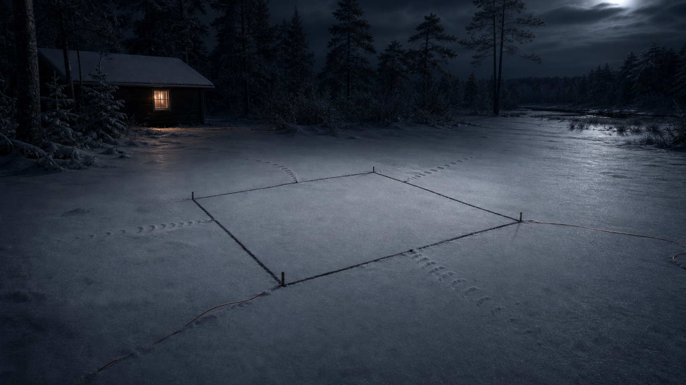

Ruinradio och signaler
Lyssna inte än. Se vad som sänder.
Radioytan ska bära ljudlager, signalnotiser och avsnittsfrön utan att transkribera skyddat material eller göra Strålsamen till klickbete.
under värme
Lyssningsfönster
Ruinradio är inte ett poddnätverk ännu.
Sidan ska visa att signaler finns, att vissa kan kommenteras och att råljud inte publiceras utan separat beslut. Strålsamen behandlas som riskmotor, Spräck som friktion och Flempo som passagefigur.
Saknas3 signalnotiser
Saknas3 avsnittsbeskrivningar
Spärringen transkription
Riskklickbete